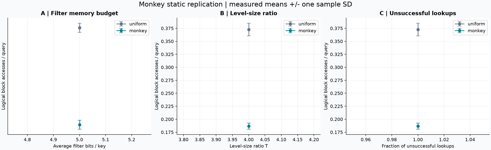
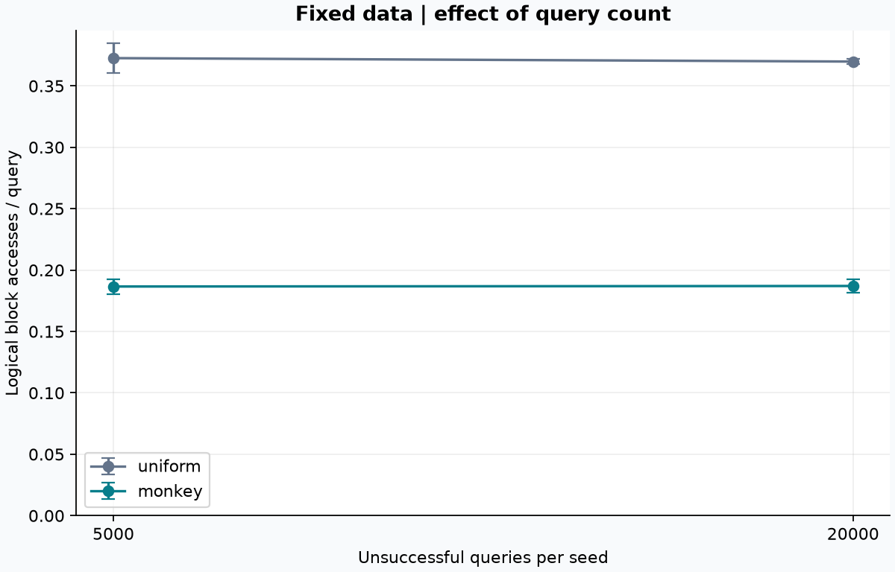
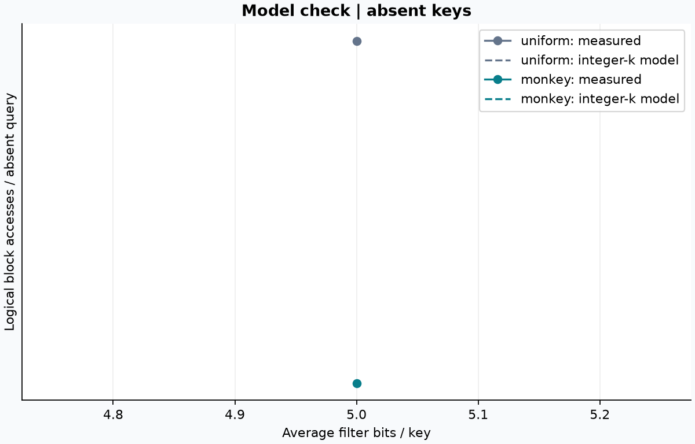
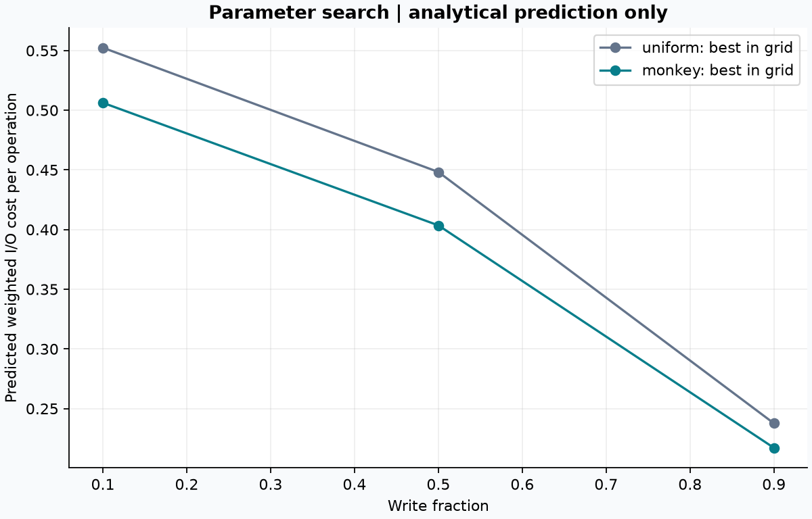

DSC5003 · Python replication
Monkey filter allocation under a fixed memory budget
Packed Bloom filters · Static levels · Paired experiments · Analytical parameter search
Uniform allocation0.37260logical page accesses per query
Monkey allocation0.18660logical page accesses per query
Base-case reduction49.9%relative to uniform bits per key
Base case with 20,000 keys, 4 levels, T=4, 5 bits per key, 5,000 queries per seed, and a miss fraction of 100%. Seeds used were [1, 2, 3].
The experiments run real Bloom filters on static data in memory. Measurements cover logical page accesses and filter bytearray payload. The parameter search uses analytical costs. The monkey strategy solves the continuous objective by bisection. When enabled, monkey_appendix_c uses the iterative transfers described in Appendix C.
Paired experiments
Within each seed, strategies share data, queries, hash salts, and total filter budget. Error bars show one sample standard deviation across seeds.

Query-count comparison on fixed data
Within each seed, the keys, level layout, and hash salts are fixed. The shorter query sequence is a prefix of the full sequence. Error bars show one sample standard deviation across seeds.

Measurements and model predictions
The measured miss cost sums per-level false-positive rates over the full set of absent keys. Mixed workloads draw their misses from that set. The CSV includes both the integer-hash-count and continuous models.

Analytical parameter search
The grid enumerates merge policies, level-size ratios, and buffer shares. It reports the lowest predicted weighted cost among those candidates. The tuning budget covers the buffer and filters. A successful lookup is modeled at the deepest run.

Data and sources
Per-run measurements · Per-level filter data · Means and standard deviations · Analytical candidates · Configuration · Environment and source hashes
Based on Monkey (SIGMOD 2017). The project adapted the BloomFilter, Run, and Level organization from predictive-lsm-trees and reuses its level-capacity helper. See THIRD_PARTY.md for attribution and implementation details.